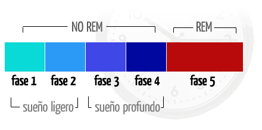
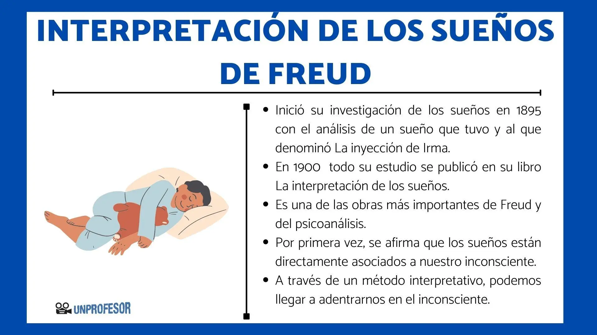

La ciencia del sueño
La somnología o ciencia del sueño es una rama de la neurociencia que estudia cómo y por qué dormimos, así como los mecanismos fisiológicos y psicológicos implicados. Durante el sueño, el cerebro realiza funciones reparadoras esenciales: procesa recuerdos, regula emociones, fortalece el sistema inmunitario y repara células. El sueño se divide en dos fases principales: no REM (donde ocurre el descanso físico profundo) y REM (donde se producen los sueños vívidos y se consolidan las emociones).
Soñar cumple funciones vitales: permite procesar emociones, estimular la creatividad y consolidar aprendizajes. Las pesadillas, que ocurren principalmente en la fase REM, pueden estar relacionadas con el estrés o la ansiedad, pero no siempre tienen un significado universal. En general, el sueño no es un estado pasivo, sino un proceso activo que mantiene el equilibrio entre cuerpo y mente. Dormir poco o mal se asocia con problemas de salud física y mental, deterioro cognitivo y cambios de humor.
"El sueño es la cadena dorada que mantiene la salud y el cuerpo juntos." — Thomas Dekker
Dormir adecuadamente es esencial; pensar que dormir poco mejora la productividad es un error común.
Los ciclos del sueño
 Cada noche atravesamos entre 4 y 6 ciclos de sueño, y cada ciclo tiene una duración aproximada de entre 90 y 120 minutos. Estos ciclos incluyen varias etapas: sueño ligero (N1 y N2), sueño profundo (N3 y N4) y la fase REM, donde ocurren los sueños más intensos.
En los primeros ciclos de la noche predomina el sueño profundo, que ayuda a la recuperación física. En los últimos ciclos, en cambio, aumenta el tiempo en fase REM, lo que favorece la consolidación de recuerdos y emociones. Despertar en medio de un ciclo puede generar sensación de cansancio, por lo que se recomienda mantener rutinas de sueño estables y respetar los horarios.
Dormir bien implica no solo descansar suficientes horas, sino también completar los ciclos de sueño sin interrupciones. Para lograrlo, se aconseja mantener un entorno oscuro y silencioso, evitar pantallas antes de dormir y establecer horarios regulares. Un sueño de calidad mejora la concentración, el estado de ánimo y el rendimiento diario.
- REM
- Fase donde ocurren los sueños vívidos y se consolidan las emociones.
- No REM
- Etapa de descanso físico profundo y recuperación corporal.
Etapas principales:
N1 - Somnolencia inicial
N2 - Sueño ligero
N3 y N4 - Sueño profundo
REM - Movimientos oculares rápidos
La psicología del sueño
 La psicología del sueño analiza cómo la mente interpreta, simboliza y procesa experiencias mientras dormimos. Los sueños en la fase REM suelen ser más intensos, con emociones fuertes y escenas surrealistas, mientras que en la fase NREM predominan pensamientos más simples y cotidianos.
En la fase REM, el cerebro reduce la actividad racional del córtex frontal, lo que permite que las imágenes y emociones fluyan sin control lógico. Desde la psicología, se ha propuesto que los sueños ayudan a procesar emociones, regular el estado de ánimo y fomentar la creatividad. Algunos enfoques también los consideran un “ensayo mental” de conflictos o miedos de la vida diaria.
Existen diferentes formas de interpretar los sueños. Según el psicoanálisis clásico, se distingue entre el contenido manifiesto (lo que recordamos del sueño) y el latente (su significado oculto). En cambio, corrientes más modernas sostienen que los sueños reflejan las preocupaciones y emociones personales de cada individuo, sin símbolos universales fijos. En cualquier caso, el sueño representa un equilibrio entre la fisiología cerebral y la vida emocional, donde el cerebro combina memoria, imaginación y emoción para mantener el bienestar mental.
La cafeína (C8H10N4O2) bloquea los receptores de adenosina, reduciendo la sensación de sueño. La energía cerebral se mide en ATP (adenosín trifosfato), que libera P3+ en reacciones metabólicas.